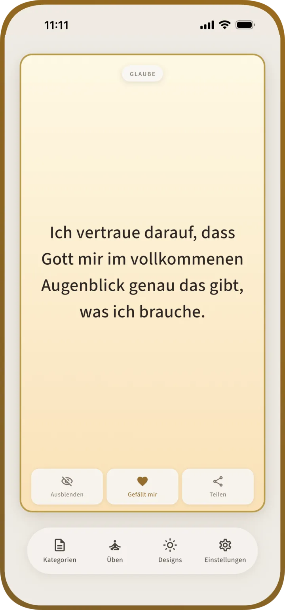
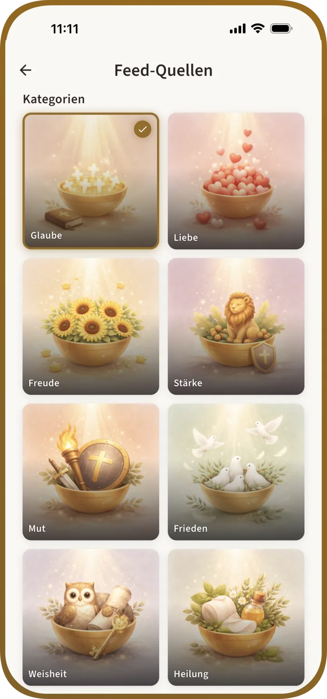
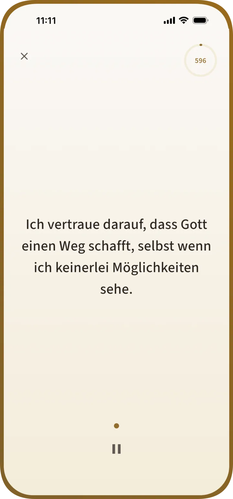
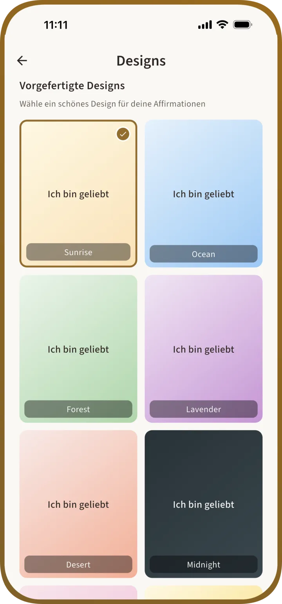

Manna.
Sammle Deine Tägliche Wahrheit.
Integriere biblische Affirmationen in dein Gebet und deine Andacht. Halte Gottes Wahrheit fest, wenn du Glaube, Hoffnung, Frieden oder Kraft brauchst.

Die Praxis
Was sind christliche Affirmationen?
Christliche Affirmationen helfen dir, im Alltag zu Gottes Wort zurückzufinden. Manna verbindet biblische Affirmationen mit einer kurzen, ruhigen Praxis, die Glaube, Hoffnung, Frieden und deine Identität in Christus in den Mittelpunkt stellt.
„Ich bin wunderbar gemacht.“
Psalm 139,14„Alles kann ich durch Christus, der mich stärkt.“
Philipper 4,13„Gott hat uns nicht einen Geist der Furcht gegeben, sondern der Kraft, der Liebe und der Besonnenheit.“
2. Timotheus 1,7Jeder Satz gründet in biblischer Wahrheit. Biblische Affirmationen geben Orientierung, wenn Angst, Trauer, Druck oder Zweifel Gottes Zusagen aus dem Blick rücken lassen.
„Passt euch nicht dieser Welt an, sondern lasst euch durch die Erneuerung eures Sinnes verwandeln.“
Römer 12,2
Die App
Gottes Verheißungen, wunderschön präsentiert.
Lege Erinnerungszeiten fest, die zu deinem Tagesablauf passen, und füge ein Widget hinzu, damit eine wichtige Zeile sichtbar bleibt.
Tägliche biblische Affirmationen

Glaube für jede Lebensphase

Übe ohne Eile

Designs
Funktionen
Eine tägliche Praxis, nicht einfach noch eine App.
Tägliche biblische Affirmationen
Baue einen einfachen Rhythmus auf.
Glaube für jede Lebensphase
Jeder Satz gründet in biblischer Wahrheit.
Üben
Der Übungsmodus schafft Raum für christliche Meditation über Gottes Wort.
Designs
Gestalte Manna persönlich.
Erinnerungen
Lege Erinnerungszeiten fest, die zu deinem Tagesablauf passen, und füge ein Widget hinzu, damit eine wichtige Zeile sichtbar bleibt.
Eigene Affirmationen
Gestalte Manna persönlich.
Warum Manna
Jeden Morgen neue Wahrheit.
Eine Praxis, die verändert.
In der Bibel Verwurzelt
Jeder Satz gründet in biblischer Wahrheit.
Erneuere Täglich Deinen Geist
Baue einen einfachen Rhythmus auf.
Baue Unerschütterlichen Glauben Auf
Der Übungsmodus schafft Raum für christliche Meditation über Gottes Wort.
Schön und Ablenkungsfrei
Die integrierte Bibliothek funktioniert offline und erfordert kein Konto. Deine persönlichen Inhalte bleiben auf dem Gerät.
Dein tägliches Manna wartet.
Sammle Deine Tägliche Wahrheit.